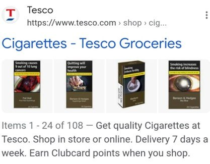
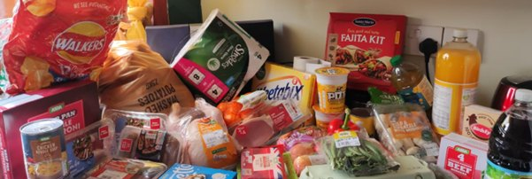
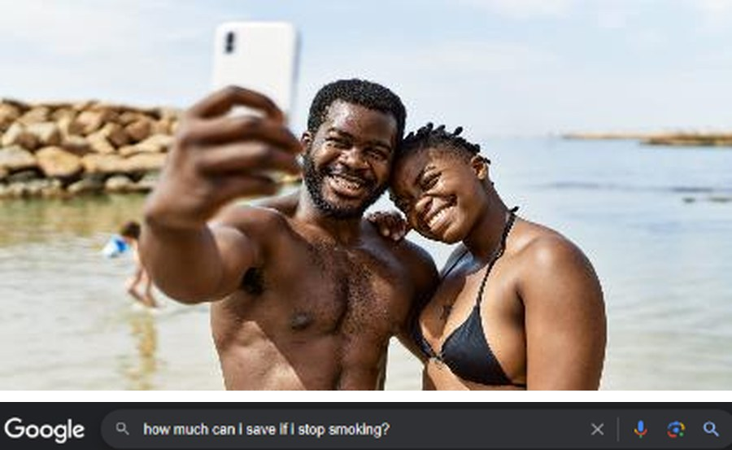

The individual
is a grain of sand
Community intelligence for public health.
Local people did research on their own community, then sat down with the health service to work out what it meant.
What we did
Nine people, eleven workshops, one health board
Between February and August 2023, in areas of rural Aberdeenshire among the most deprived in Scotland, nine community members took part in eight workshops as co-researchers rather than as subjects. They set the questions, gathered the evidence and captioned it themselves.
Three further workshops brought them together with NHS Grampian and Turning Point Scotland to interpret that evidence and agree what should change. In February 2024 we went back to see whether anything had.

What national data show
Quitting works just as well in the poorest communities. Far fewer people get to try.
Our analysis of the Scottish Health Survey and national cessation data compared the most deprived fifth of Scotland with the least deprived.
Who smokes
Adults who smoke, 2021.
Five times the rate.
Who gets to try
Supported quit attempts, 2021–22.
Fewer attempts, where smoking is most common.
Who succeeds
Still not smoking at twelve weeks, 2022.
No gap. The inequality is in access, not in willpower.
Cowan, E. (2023). Smoking and smoking cessation in Scotland: secondary data analysis. Figures approximate, as reported in the source. Read the analysis
What community partners found
“No means to break the cycle”
Financial stress rising at exactly the moment smoking and vaping products became cheaper, closer and easier to buy — and cessation services people did not know existed.
Community researchers built this problem tree themselves, unpacking causes and consequences from their own experience and turning it into collective knowledge.

What community partners photographed
Images selected and captioned by the people who took them



What was agreed
A shared action agenda with the health authority
Community partners appraised the campaigns themselves — materials, wording, placements, messages. Existing campaigns framed the money saved as survival: fuel, groceries. Partners wanted aspiration instead. They wanted ‘free’ said louder. And they wanted the stress underneath the smoking addressed, not just the smoking.

01
Targeting root causes
Cessation support has to recognise that smoking is, for some people, the only stress relief they have.
02
Inclusive access
How can people use a service if they do not know it exists?
03
Incentivising
‘Free’ matters enormously for people who are struggling.
Published research
The study, peer reviewed and open access
Cost of Living/Cost of Smoking: A Demonstration Study of Cooperative Action Learning to Understand and Address Smoking in Deprived Communities Within the Cost-of-Living Crisis
Social Policy & Administration, 2025; 59:309–323. doi:10.1111/spol.13082
Nine community-based participants took part in eight workshops as co-researchers, collecting and arranging new data and evidence. Three further workshops with service providers analysed and interpreted that data, appraised local action, and reflected on the process.